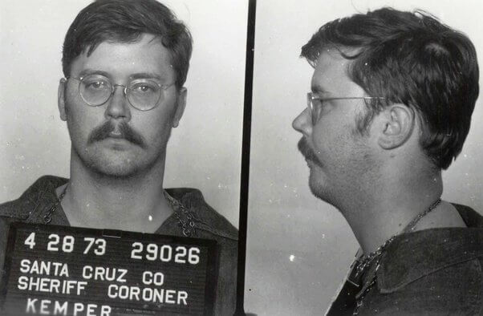
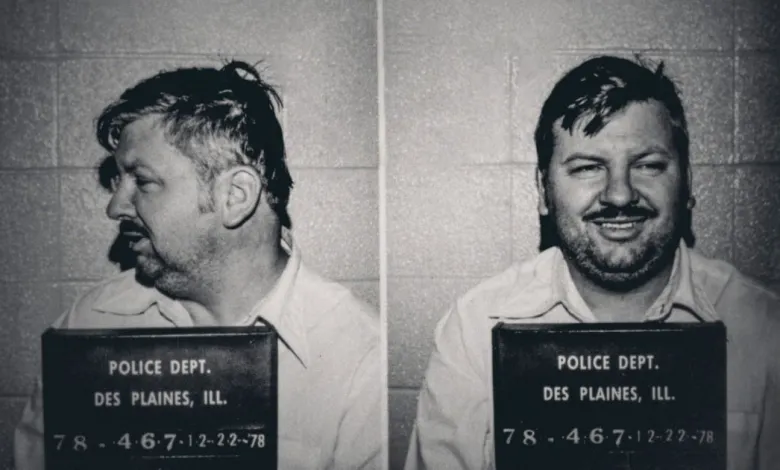

<DOCTYPE html>
    <html lang="es">

    <head>
        <meta charset="UTF-8">
        <meta http-equiv="X-UA-Compatible" content="IE=edge">
        <meta name="viewport" content="width=device-width, initial-scale=1.0">
        <title>The Ripper</title>
        <link rel="shortcut icon" href="./img/policiales.jpg" type="image/x-icon">

    </head>
    <style>
        * {
            box-sizing: border-box;
            margin: 0;
            padding: 0;
        }
        
        body {
            font-family: Verdana, Arial, Helvetica, sans-serif;
            background: black;
        }
        
        ul {
            list-style-type: none;
            margin: 0;
            padding: 0;
            overflow: hidden;
            background-color: rgb(0, 0, 0);
        }
        
        li {
            float: left;
        }
        
        li a {
            display: block;
            color: antiquewhite;
            text-align: center;
            padding: 10px 16px;
            text-decoration: none;
        }
        
        li a:hover {
            background: rgb(236, 0, 0);
            background: radial-gradient(circle, rgba(236, 0, 0, 1) 0%, rgba(11, 1, 1, 1) 59%);
        }
        
        .slider {
            width: 100%;
            height: 100%;
            margin: auto;
            overflow: hidden;
        }
        
        .slider ul {
            padding: 0;
            width: 400%;
            display: flex;
            animation: cambio 20s infinite alternate;
            animation-timing-function: linear;
        }
        
        .slider li {
            width: 100%;
            list-style: none;
        }
        
        .slider li img {
            width: 100%;
            height: 95vh;
            background-position: center;
            filter: opacity(.5);
        }
        
        @keyframes cambio {
            0% {
                margin-left: 0%;
            }
            20% {
                margin-left: 0%;
            }
            25% {
                margin-left: -100%;
            }
            45% {
                margin-left: -100%;
            }
            50% {
                margin-left: -200%;
            }
            70% {
                margin-left: -200%;
            }
            75% {
                margin-left: -300%;
            }
            100% {
                margin-left: -300%;
            }
        }
        /* Mobil */
        
        @media (max-width: 700px) {
            .slider {
                width: 100%;
                height: 100%;
                margin: auto;
                overflow: hidden;
            }
        }
        
        @media (max-width: 500px) {
            .slider {
                width: 100%;
                height: 100%;
                margin: auto;
                overflow: hidden;
            }
        }
    </style>

    <body>
        <nav>
            <ul>
                <li><a href="asesinos.html">Asesinos Seriales</a></li>
                <li><a href="sobre.html">Sobre</a></li>
            </ul>
        </nav>
        <div class="slider">

            <ul>
                <li></li>
                <li></li>
                <li></li>
                <li></li>
            </ul>


        </div>
    </body>

    </html>